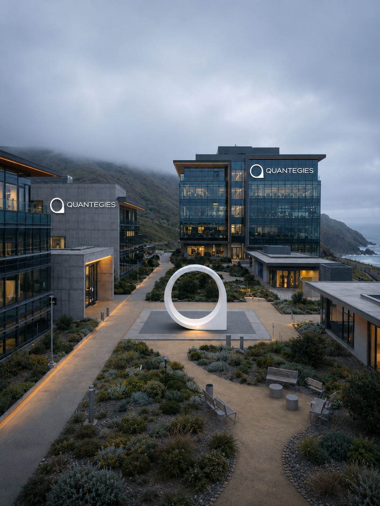

Own the whole outcome.
Move from problem framing through implementation, validation, and deployment instead of handing work across layers.
Join a small, ambitious team building quantitative research, execution systems, and Financial products used to understand and operate in global markets.

Research, engineering, and markets
Collaborate directly across quantitative research, machine learning, execution, and product engineers, without layers separating the idea from the outcome.
Structure
Small teams
Standard
Research rigor
Outcome
Live impact
Open positions
Every role is close to the work. You will collaborate directly with researchers, engineers, product leaders, and traders.
Try a different team, location, or search term.
Why Quantegies
We combine the rigor of a research lab with the accountability of live systems. Ideas are expected to become measurable, testable, and useful.
Move from problem framing through implementation, validation, and deployment instead of handing work across layers.
Market microstructure, temporal modeling, execution, simulation, and product engineering meet in the same environment.
We value fast iteration, but not careless iteration. Good speed comes from clarity, instrumentation, and strong technical taste.
Contributions reach internal traders, research workflows, BAQLABS, Atlas Charts, SYNQ, and live operating systems.
How we work
We are structured around direct collaboration, documented decisions, and measurable outcomes. Titles matter less than the ability to improve the quality of the work around you.
We use written plans, clear owners, focused working sessions, and regular reviews so remote work remains fast and coordinated.
We care about out-of-sample behavior, execution constraints, latency, operational reliability, and the difference between a backtest and a deployable system.
Work is reviewed directly and frequently. The goal is not ceremony; it is reducing ambiguity and improving decisions before small issues become expensive ones.
Packages vary by role and geography and may include base compensation, performance-based incentives, or other long-term components depending on the position.
Hiring process
The exact process varies by role, but every stage is designed to evaluate real judgment rather than rehearsed interview performance.
STEP 01
We review your work, experience, and evidence of ownership—not just titles or pedigree.
STEP 02
A focused discussion about your decisions, trade-offs, technical depth, and the role’s actual mandate.
STEP 03
A concise role-relevant exercise, case study, code review, research critique, or trading scenario.
STEP 04
We align on scope, expectations, compensation, availability, and what success looks like in the first 90 days.
FAQ
No exact match?
Send us your background, the work you are most proud of, and the problem you believe you could help us solve.